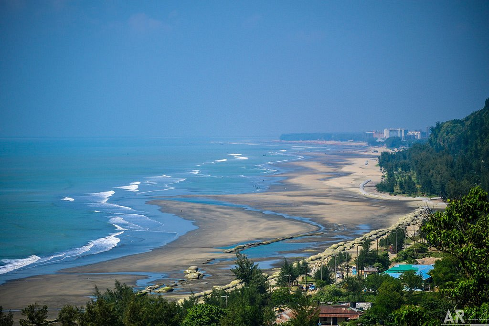
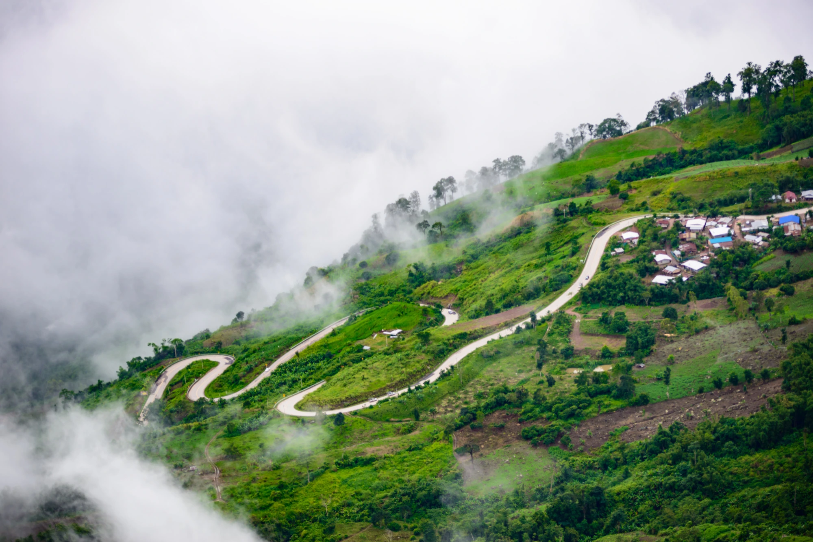
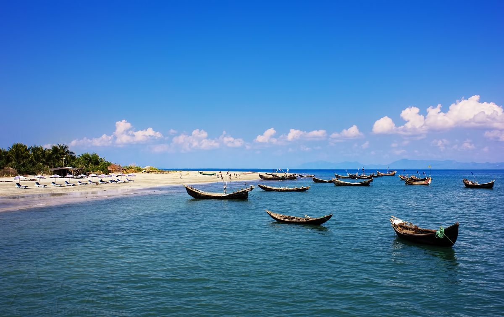

Cox’s Bazar is a town on the southeast coast of Bangladesh. It’s known for its very long, sandy beachfront, stretching from Sea Beach in the north to Kolatoli Beach in the south. Aggameda Khyang monastery is home to bronze statues and centuries-old Buddhist manuscripts. South of town, the tropical rainforest of Himchari National Park has waterfalls and many birds. North, sea turtles breed on nearby Sonadia Island.

According to the 2022 Bangladesh census, Bandarban city had a population of 54,450 and a literacy rate of 85.99%.[3]: 388–394 According to the 2011 Bangladesh census, Bandarban city had 8,699 households and a population of 41,434. 8,561 (20.66%) were under 10 years of age. Bandarban had a literacy rate (age 7 and over) of 67.11%, compared to the national average of 51.8%, and a sex ratio of 787 females per 1000 males. Ethnic population was 8,610 (20.78%), of which Marma were 5,494 and Tripura 880.[4]

Saint Martin is part of the Leeward Islands in the Caribbean Sea. It comprises 2 separate countries, divided between its northern French side, called Saint-Martin, and its southern Dutch side, Sint Maarten. The island is home to busy resort beaches and secluded coves. It's also known for fusion cuisine, vibrant nightlife and duty-free shops selling jewelry and liquor.